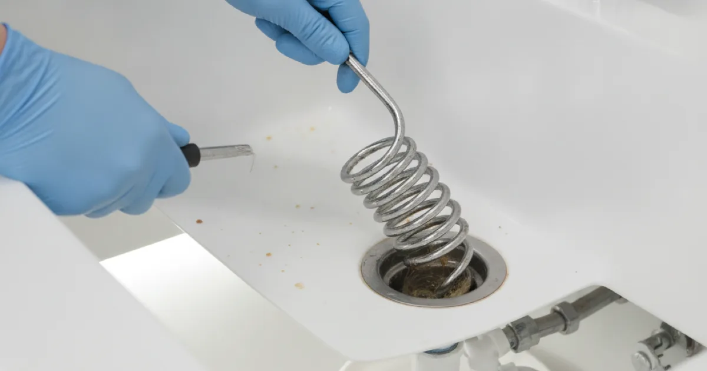
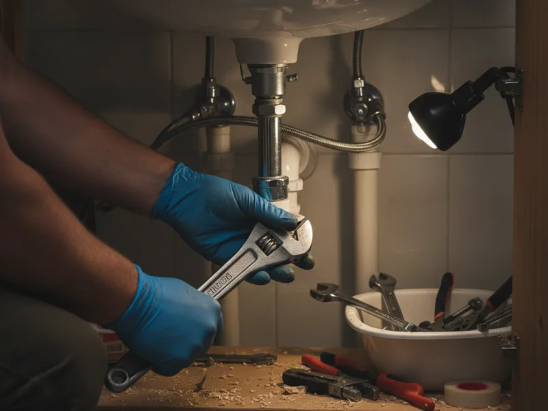

Plumber in Armonk, NY
When something goes wrong with your plumbing, you need a local plumber who answers the phone, shows up when promised, and fixes the problem the right way. That's Pete's Plumbing.
- Licensed & Insured
- Same-Day Service Available
- Upfront Pricing
- 15+ Years of Experience
Why Armonk homeowners call Pete's Plumbing
Locally owned, not a franchise
We're based right here in Westchester County, not dispatched from a call center. When you call, you're talking to people who know Armonk and the surrounding towns.
15+ years of hands-on experience
We've spent over 15 years fixing the kinds of plumbing problems that come up in this area, from older homes to newer construction, residential and light commercial.
Upfront pricing, no surprises
You'll know the cost before we start. No pressure, no inflated add-ons — just a clear explanation of the problem and your options.
Same-day and emergency availability
Plumbing problems don't wait for a convenient time. We offer same-day appointments and emergency service when something can't wait until tomorrow.
What our customers say
We're proud of the relationships we've built with homeowners across Armonk and Westchester County. Customer reviews will be featured here as they come in through our Google Business Profile.
Google review widget will appear here.
Drainage Service
Westchester County has one of the most varied mixes of housing stock in the area — Armonk and its neighboring towns include homes with original cast-iron and clay drain lines from decades ago right alongside newer construction running modern PVC. Older pipe tends to develop buildup and corrosion inside the line itself, while newer homes are more likely to see a one-time clog from something that shouldn't have gone down the drain. We look at what's actually happening in your specific pipes before recommending a fix, whatever era your home was built.
When the same drain keeps backing up every few months, or more than one fixture is slow at once, the problem often isn't the fixture at all — it's further down the line. We start with a camera inspection to see the actual condition of the pipe instead of guessing, and if roots have worked their way into an older clay sewer lateral (common enough on Armonk and Bedford's more wooded lots), we'll walk you through the repair options before touching anything.
From routine drain cleaning to high-pressure hydro jetting and grease trap service for Armonk-area restaurants, our drain and sewer service for Armonk homes covers every stage of a drain or sewer problem under one roof, with upfront pricing before any work starts.
Learn More
Gasfitter
Gas water heaters, furnaces, ranges, and even gas fireplaces get a real workout once the cold sets in across Armonk, Bedford, and the rest of our Westchester County service area. A gas appliance that ran fine all fall can start acting up the moment the first hard freeze hits, and a gas line issue isn't something to leave until spring.
If you smell gas, even faintly, notice a hissing sound near a line or meter, or have an appliance that won't light or keeps going out, that's not something to troubleshoot yourself. Our licensed gas line services test the line, confirm exactly what's wrong, and explain it in plain language before any repair begins.
Beyond leak repair, we also handle gas water heater installation for homes replacing an aging unit or switching over from electric — all with the same upfront pricing and clear explanation of what we find.
Learn More
Water Heater Installation
Armonk and the surrounding Westchester County towns have a lot of larger homes with three, four, or more bathrooms, which puts real demand on a water heater during a busy morning. A tank sized for a smaller household — or for the home's previous owners — often can't keep up once every bathroom is in regular use, and we see that mismatch a lot in homes that have changed hands or been added onto over the years.
We start by looking at your household's actual hot water use, not just a generic size chart, then help you choose between our full range of water heater installation options, from a standard tank to tankless, if space or a larger household make that worth considering. Whatever you choose, we give you a clear price before we start and test everything before we call the job done.
Rusty or discolored hot water, rumbling or popping sounds from the tank, and water pooling at the base are all signs a unit is on its way out — most tank water heaters last around 8 to 12 years, and replacing one on your schedule beats waiting for it to fail during a shower.
Learn More
Drain Cleaning
Most drain problems give you a warning before they turn into a full backup: water draining slower than usual, a gurgling sound, or a smell that lingers even after cleaning. In kitchens it's usually grease or food buildup; in bathrooms, hair and soap residue. We see the same pattern across homes throughout Armonk, Pleasantville, and the rest of Westchester County — homeowners wait a little too long, and a five-minute fix turns into an afternoon project, which is why we offer same-day drain cleaning whenever the schedule allows.
We start by asking what you've noticed and where, which narrows down the likely cause before we even open a toolbox. From there we inspect the fixture and drain line and clear it with a hand-fed cable or drain machine sized for the pipe — and if we suspect there's more buildup further down, we'll walk you through options like high-pressure hydro jetting rather than just clearing the immediate clog and leaving the rest in place.
A plunger is worth trying first for a single slow fixture. But if more than one drain is slow at the same time, that usually points to something further down the line, not a simple single-fixture clog — worth a call rather than repeated plunging.
Learn More
Gas Line Repair
Most gas line issues we find in older Armonk-area homes come down to a handful of causes: corroded or aging pipe fittings, a connection that was never sealed properly, ground shifting that stresses a buried line, or a worn appliance connector. Newer homes aren't immune either — a fitting installed slightly wrong during construction can leak slowly for a long time before anyone notices.
If you smell gas strongly or hear hissing near a line, get everyone out of the house immediately, don't flip a switch or light a match, and call your gas utility's emergency line or 911 before calling us. Once the situation is confirmed safe, our gas line repair and safety checks test the line, isolate exactly where the pressure is dropping, and repair it so service can be safely restored.
We don't guess at the cause of a leak or a pressure drop — we confirm it, explain what we found, and give you a clear price before any repair work begins.
Learn MoreEmergency Plumbing Repair
A true plumbing emergency usually involves water you can't stop, a risk to your home's structure, or a health and safety concern — a burst or actively leaking pipe, a sewer backup coming into the house, no water at all, or a gas smell near a water heater. If water is actively spreading or you smell gas, treat it as an emergency and call us right away, which is why we offer 24/7 emergency plumbing response across our full service area.
Being locally based means a burst pipe in Armonk, Bedford, or Greenwich doesn't wait any longer than one down the street from our shop — we're not routing your call through a national dispatch center. Winter is when we see the most true emergencies: a hard freeze can crack a pipe in an unheated crawl space or exterior wall, and you often won't notice until a thaw, when the water finally starts flowing.
Not every plumbing problem needs an emergency call — a running toilet or a water heater that's simply getting older but still working can usually be scheduled within a day or two. If you're not sure which one you're dealing with, call us and describe it; we'll tell you honestly whether it needs to jump the line.
Learn MoreSee our full list of services for everything else we handle, from fixture installs to plumbing maintenance.
Serving Armonk and the surrounding area
We work in homes and small commercial properties throughout Armonk, Pleasantville, Mount Kisco, Yonkers, Bedford, Scarsdale, and Greenwich. Westchester County has a real mix of housing stock — older homes with aging pipes, newer construction, and everything in between — and we've worked on all of it.
How it works
1. Call or request an estimate
Tell us what's going on. We'll ask a few questions to understand the problem before we arrive.
2. We diagnose the real issue
We look at what's actually happening, not just the symptom, so the fix addresses the cause.
3. You get clear, upfront pricing
Before any work starts, you'll know what it costs and why.
4. We do the work right
Clean, respectful service, with the job done correctly the first time.

Licensed, insured, and locally trusted
- Licensed & Insured
- Westchester County Licensed Plumber
- Same-Day Service Available
- Upfront Pricing
- Clean, Respectful Technicians
- Locally Owned & Operated
- 15+ Years of Experience
- Emergency Plumbing Available
Get in touch
Google Business Profile embed will appear here.
Frequently asked questions
Do you offer same-day plumbing service in Armonk?
Yes. We offer same-day appointments whenever possible, and emergency service for problems that can't wait, like burst pipes or active leaks.
Are you licensed and insured?
Yes. Pete's Plumbing is a licensed Westchester County plumber, and we're fully insured for both residential and light commercial work.
Do you give upfront pricing before starting work?
Always. We explain the problem, walk through your options, and give you a clear price before any work begins.
What areas do you serve?
We serve Armonk and nearby communities including Pleasantville, Mount Kisco, Yonkers, Bedford, Scarsdale, and Greenwich.
Do you work on older homes?
Yes. A lot of our work is in older Westchester County homes with aging pipes and outdated fixtures, alongside newer construction.
Do you handle commercial plumbing?
We handle light commercial plumbing in addition to residential work. Call to discuss your property's specific needs.
What if my plumbing problem is an emergency?
Call us right away. We offer emergency plumbing service for situations like burst pipes, major leaks, and sewer backups.